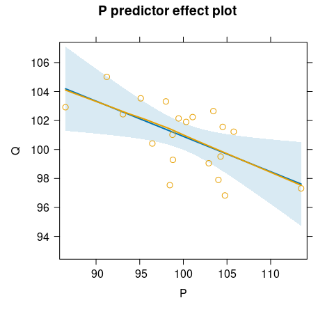
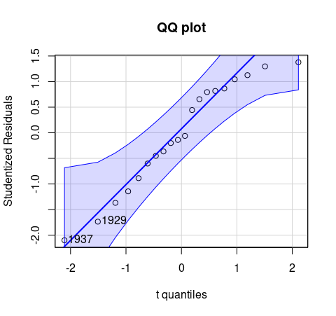
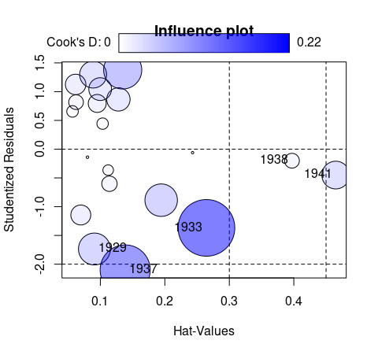

An implementation of instrumental variables regression using two-stage least-squares (2SLS) estimation, based on the ivreg() function previously in the AER package. In addition to standard regression functionality (parameter estimation, inference, predictions, etc.) the package provides various regression diagnostics, including hat values, deletion diagnostics such as studentized residuals and Cook’s distances; graphical diagnostics such as component-plus-residual plots and added-variable plots; and effect plots with partial residuals.
Instrumental variables regression:
library("ivreg")
ivreg(Q ~ P + D | D + F + A, data = Kmenta)Via two-stage least squares (2SLS):
With diagnostics:
